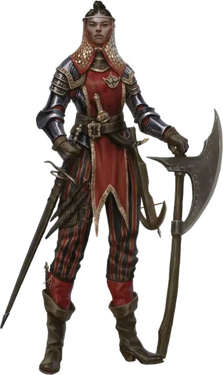

Ташлин Яфира
Tashlyn Yafeera
Средний Гуманоид (Человек), нейтральный, именной НИП

Класс Доспеха 18 (латы)
Хиты 149 (23к8 + 46)
Скорость 30 футов
| мод | спас | ||
|---|---|---|---|
| СИЛ | 18 | +4 | +8 |
| ЛОВ | 15 | +2 | +2 |
| ТЕЛ | 14 | +2 | +6 |
| мод | спас | ||
|---|---|---|---|
| ИНТ | 10 | +0 | +0 |
| МДР | 14 | +2 | +2 |
| ХАР | 12 | +1 | +1 |
Навыки Атлетика +8, Восприятие +6, Запугивание +5
Чувства пассивное Восприятие 16
Языки Общий
Опасность 9 (5000 опыта)
Бонус мастерства +4
Особенности
Второе дыхание (перезарядка после короткого или продолжительного отдыха). Бонусным действием Ташлин может восстановить 20 хитов.
Упорный (2/день). Ташлин может перебросить проваленный спасбросок, и обязана использовать новый результат
Дополнительный урон. Если у Ташлина остаётся больше половины её хитов, он дополнительно наносит 7 (2к6) урона при каждом попадании.
Действия
Мультиатака. Ташлин совершает три атаки Двуручным мечом или Коротким луком.
Двуручный меч. Рукопашная атака оружием: +8 к попаданию, досягаемость 5 футов, одна цель. Попадание: 11 (2к6 + 5) рубящего урона.
Короткий лук. Дальнобойная атака оружием: +6 к попаданию, дистанция 80/320 футов, одна цель. Попадание: 5 (1к6 + 2) колющего урона.
Описание
Ташлин — мастер оружия и наёмников у глубоководных Жентарим. Её работа— добывать броню и оружие и тренировать наёмников, которым платит Чёрная Сеть.
Разбойниками Рока прозвали себя пятеро беспринципных искателей приключений, обожавших грабить логова личей (которые многие называют «роковыми»).
Ташлин устроила себе удобное прикрытие, нанявшись телохранительницей к Ворондару Левелстоуну, судье-дварфу, живущему у Южных ворот. Дварф ей нравится, и она втёрлась к нему в доверие, что позволило ей заполучить звание капитана Городской гвардии. Благодаря этому она следит за грузами, проходящими через ворота, и помогает партнёрам по Чёрной Сети входить и выходить беспрепятственно.
Ташлин родилась в богатой семье в Калимшане и привыкла считать себя лучше других. Она вспыльчива и не любит избегать драки. Но она уважает тех, кто может победить её в ближнем бою.
Три года назад они прекратили поиски приключений, вступили в Чёрную Сеть и приехали в Глубоководье, планируя устроить тут ячейку Жентарим. За это время они заключили союзы с разными аристократами и гильдиями, а с другими поссорились, в то же время пытаясь отбиться от лазутчиков Арфистов.